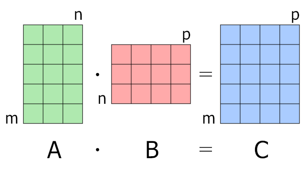

Matrix Multiplication and Broadcasting
Understanding the transformation of input through weights and biases is fundamental in machine learning. Let's dive into how matrix multiplication plays a crucial role. It's all about matrix multiplication, the bread and butter of transforming inputs into meaningful outputs. Let's dive into how weights, biases, and inputs dance together in this mathematical ballet.

For matrix multiplication, the number of columns in the first matrix must be equal to the number of rows in the second matrix. The result matrix has the number of rows of the first and the number of columns of the second matrix.